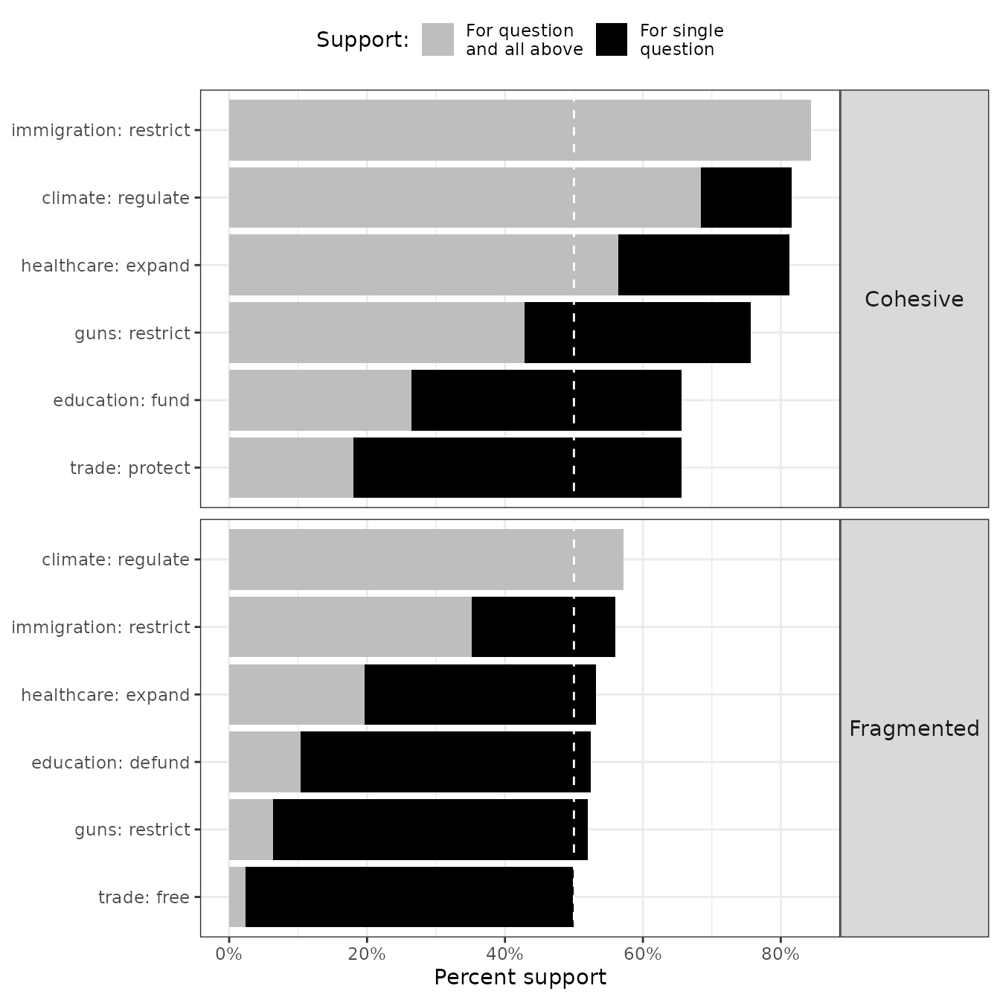
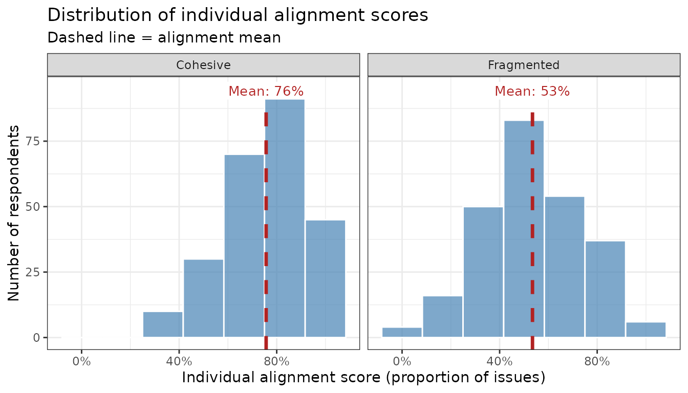
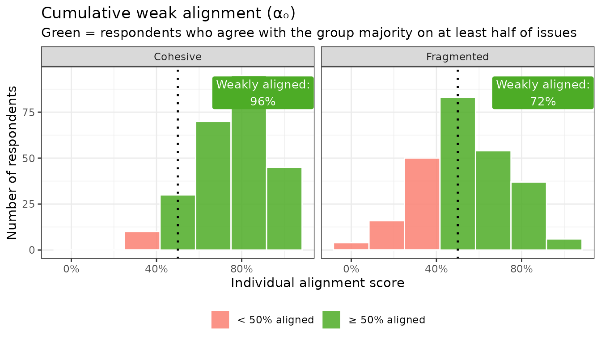
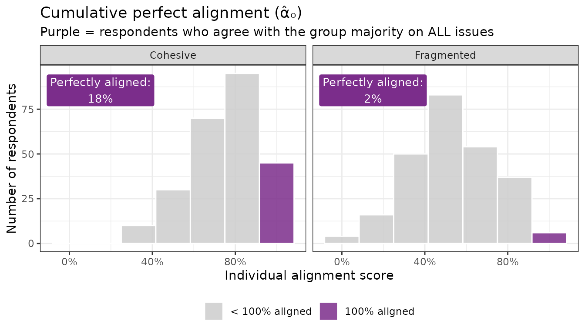
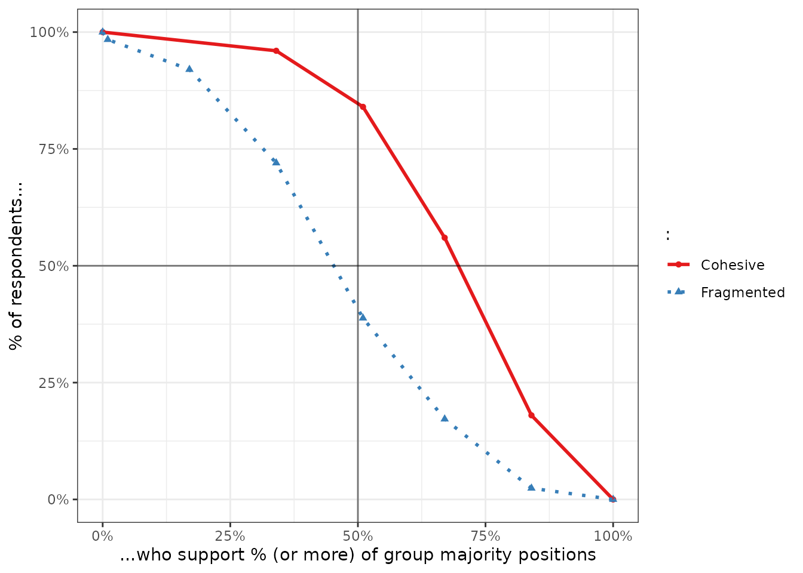
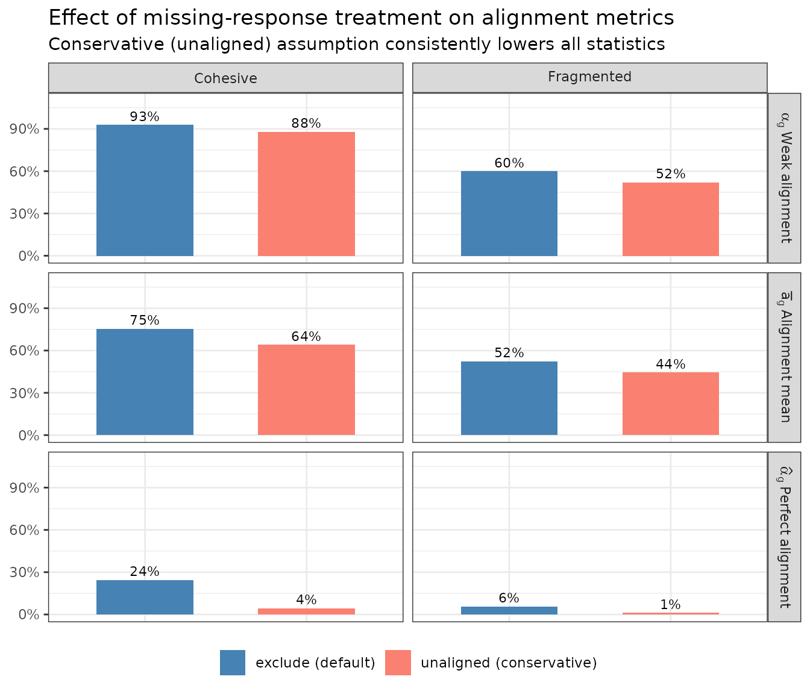
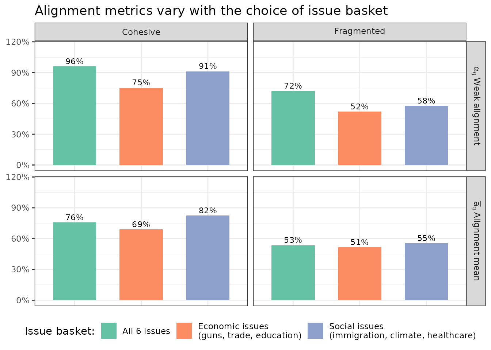

Understanding Group Alignment in Public Opinion
A conceptual guide to
survalign metrics
survalign.RmdWhy measure group alignment?
Polling a group on a single issue is straightforward — but democracy rarely works one issue at a time. Political coalitions, social movements, and interest groups succeed or fail based on whether their members can agree across a basket of issues, not just one in isolation.
Consider two hypothetical coalitions:
- Coalition A has 80% of members agreeing that immigration should be reduced and that taxes should be cut and that gun restrictions should be loosened.
- Coalition B has majorities supporting each of those same positions separately, but very few members who agree with all three at once.
A traditional issue-by-issue analysis would treat both coalitions as equally unified. But anyone who has watched politics knows they are not. Coalition A can reliably deliver votes, endorsements, and coordinated pressure. Coalition B is a paper majority that fragments the moment it has to act collectively.
Group alignment measures fill this gap. Rather than asking “what does this group believe on each issue?”, they ask “how unified is this group across its issue positions as a whole?”
Setup: toy data
To ground each metric concretely, we’ll use a small synthetic dataset of 500 respondents split into two groups — a cohesive coalition and a fragmented one — each surveyed on six binary policy questions.
The dataset has 500 respondents, 250 per coalition, each with binary responses to six policy questions:
head(toy) |>
kable()| id | group | immigration | climate | healthcare | guns | trade | education |
|---|---|---|---|---|---|---|---|
| 1 | Cohesive | restrict | deregulate | cut | restrict | protect | fund |
| 2 | Cohesive | restrict | regulate | cut | loosen | protect | defund |
| 3 | Cohesive | restrict | regulate | expand | restrict | protect | fund |
| 4 | Cohesive | restrict | regulate | expand | loosen | protect | defund |
| 5 | Cohesive | restrict | regulate | cut | loosen | protect | fund |
| 6 | Cohesive | restrict | regulate | expand | restrict | free | fund |
Measure alignment for both coalitions at once:
align <- measure_alignment(
data = toy,
ques_cols = issues,
group_col = "group",
id_col = "id",
verbose = FALSE
)The motivation: issue-by-issue support is limited
Before walking through the metrics, it is worth seeing why we need them in the first place.
Even when each issue individually commands majority support within a group, the share who agrees with all of them simultaneously — the true measure of coalition cohesion — can fall sharply.
plot_cumulative_majority() makes this visible. For each
group, it overlays per-issue support (grey bar) against the cumulative
share that supports that issue and all more-popular ones above
it (black bar):
plot_cumulative_majority(align)
How to read it: In the Cohesive coalition, per-issue support (grey) stays well above 50% for every question — but the cumulative bar (black), the share who agrees with the majority on this and all easier questions combined, declines steadily. In the Fragmented coalition this drop is more severe: the cumulative bar falls below 50% almost immediately. Issue-by-issue polling would miss this departure entirely.
The building block: individual alignment
measure_alignment() returns a structured list. The core
respondent-level result is $respondent_alignment, which
gives each person their overall alignment score — the share of issues on
which they agreed with their group’s majority:
align$respondent_alignment |>
select(group, id, prop_questions_aligned) |>
slice_sample(n = 12) |>
arrange(group, desc(prop_questions_aligned)) |>
mutate(prop_questions_aligned = percent(prop_questions_aligned, accuracy = 1)) |>
rename(Group = group, `Respondent ID` = id, `Alignment score` = prop_questions_aligned) |>
kable()| Group | Respondent ID | Alignment score |
|---|---|---|
| Cohesive | 31 | 100% |
| Cohesive | 215 | 100% |
| Cohesive | 145 | 100% |
| Cohesive | 93 | 83% |
| Cohesive | 233 | 83% |
| Cohesive | 119 | 83% |
| Cohesive | 128 | 83% |
| Cohesive | 194 | 67% |
| Cohesive | 69 | 67% |
| Cohesive | 88 | 67% |
| Cohesive | 197 | 50% |
| Cohesive | 140 | 50% |
| Fragmented | 298 | 83% |
| Fragmented | 462 | 83% |
| Fragmented | 458 | 83% |
| Fragmented | 277 | 50% |
| Fragmented | 473 | 50% |
| Fragmented | 305 | 50% |
| Fragmented | 426 | 50% |
| Fragmented | 377 | 50% |
| Fragmented | 420 | 33% |
| Fragmented | 493 | 33% |
| Fragmented | 490 | 17% |
| Fragmented | 495 | 17% |
The key column is prop_questions_aligned: a value of 1.0
means perfect agreement with all group majority positions; 0.5 means
agreement on half.
Metric 1: Alignment mean
Definition: The average alignment score across all respondents in a group. Units: respondents’ average share-of-issues agreed, 0–100%.
where is the share of issues on which respondent agrees with the group majority. Note that if we are inferring support about a population and survey weights are available, this would be expressed as a weighted mean - for simplicity, let’s skip the weights.
The alignment mean is an intuitive summary of how cohesive a coalition is. An alignment mean of 80% means the average member agrees with the group majority on 4 out of 5 issues; one of 55% means barely more than half.

How to interpret it: The Cohesive coalition’s distribution is concentrated near the right end of the scale. The Fragmented coalition’s is flatter and centered lower. The means capture this in one number, but miss information about how spread out the distributions are — which is why the remaining metrics add value.
Metric 2: Cumulative weak alignment
Definition: The share of respondents who agree with their group’s majority on at least half of issues. Units: share of individuals, 0–100%.
This is a headcount: it answers “what fraction of the group is at least loosely on board?” A coalition where only 40% of members agree with the majority on at least half of issues is fractured even if the mean alignment looks moderate. (Note: the threshold means that a respondent who agrees on exactly half of an even number of issues counts as weakly aligned.)

How to interpret it: In the Cohesive coalition, nearly everyone falls to the right of the 50% threshold (green). In the Fragmented coalition, a sizable share falls to the left (red). The labeled percentage is .
Metric 3: Cumulative perfect alignment
Definition: The share of respondents who agree with their group’s majority on every single issue. Units: share of individuals, 0–100%.
This is a stricter bar. While captures the breadth of a coalition, captures its ideological core — the true believers who will never defect. This number tends to be small even in cohesive groups, which is why it is most useful in comparison across groups or over time.

How to interpret it: Cumulative perfect alignment is a high bar — even in the Cohesive coalition, only a fraction of respondents hits 100%. The contrast with the Fragmented coalition still holds, but be careful about over-interpreting small differences here, especially in smaller samples.
Note that perfect alignment declines mechanically as more issues are added to the basket — even if every item individually has strong majority support, while weak alignment is less sensitive to this problem. See more below
Metric 4: Cumulative issue alignment
Definition: The number (or share) of issues on which a majority of respondents agrees with the group’s plurality position. Units: issues, 0–K issues or equivalently 0–100% of issues.
This metric shifts the lens from respondents to issues: rather than
asking how well members track the group’s agenda, it asks how many
issues actually constitute a coherent group agenda in the first
place. The cumulative bars in plot_cumulative_majority()
above already show this at the issue level. summary()
collapses it to the overall count:
summary(align) |>
select(group, cumulative_issue_alignment_n, cumulative_issue_alignment_prop) |>
mutate(cumulative_issue_alignment_prop = percent(cumulative_issue_alignment_prop, accuracy = 1)) |>
rename(
Group = group,
`Issues w/ majority support (N)` = cumulative_issue_alignment_n,
`Issues w/ majority support (%)` = cumulative_issue_alignment_prop
) |>
kable()| Group | Issues w/ majority support (N) | Issues w/ majority support (%) |
|---|---|---|
| Cohesive | 3 | 50% |
| Fragmented | 1 | 17% |
How to interpret it: In the Cohesive coalition, most issues are endorsed by a clear majority — these form a reliable agenda. In the Fragmented coalition, fewer issues clear the bar, meaning the group’s nominal position has shaky support even among its own members.
Metric 5: The alignment curve
Definition: A curve plotting, for each alignment threshold , the share of respondents whose alignment score is at or above .
The alignment curve is the most complete picture of group cohesion. It doesn’t reduce to a single number but instead shows the full trade-off: as you raise the bar (x-axis, moving right), how quickly does the share of members who clear it (y-axis) fall off? A cohesive group’s curve stays high for a long time; a fragmented group’s drops steeply near the left.
The curve encodes the earlier metrics as readable points: the x-value where the horizontal 50% line intersects the curve gives ; the y-value at gives . Hover over any point to read an exact plain-English interpretation:
plot_alignment_curve(align)
How to interpret it: The Cohesive coalition’s curve stays near the top of the chart before declining — meaning large fractions of members are highly aligned. The Fragmented coalition’s curve drops off quickly, indicating that requiring broad agreement rapidly excludes most members.
Putting it all together
Each metric captures a different facet of group alignment:
| Metric | Notation | Question it answers | Unit | Scale |
|---|---|---|---|---|
| Alignment Mean | On average, how aligned is a typical member? | Issues | 0–100% | |
| Cumulative Weak Alignment | What share of members mostly supports the group position? | Individuals | 0–100% | |
| Cumulative Perfect Alignment | What share of members agrees on everything? | Individuals | 0–100% | |
| Cumulative Issue Alignment | How many issues have genuine majority buy-in? | Issues | 0–K or 0–100% | |
| Alignment Curve | What does the full distribution of alignment look like? | — | Visual |
summary() returns all scalar metrics at once:
summary(align) |>
select(group, alignment_mean, cumulative_weak_alignment,
cumulative_perfect_alignment, cumulative_issue_alignment_n,
cumulative_issue_alignment_prop) |>
mutate(across(c(alignment_mean, cumulative_weak_alignment,
cumulative_perfect_alignment, cumulative_issue_alignment_prop),
~ percent(.x, accuracy = 1))) |>
rename(
Group = group,
`Alignment mean` = alignment_mean,
`Cumulative Weak Alignment` = cumulative_weak_alignment,
`Cumulative Perfect Alignment` = cumulative_perfect_alignment,
`Cumulative Issue Alignment` = cumulative_issue_alignment_n,
`Cumulative Issue Alignment (%)` = cumulative_issue_alignment_prop
) |>
kable()| Group | Alignment mean | Cumulative Weak Alignment | Cumulative Perfect Alignment | Cumulative Issue Alignment | Cumulative Issue Alignment (%) |
|---|---|---|---|---|---|
| Cohesive | 76% | 96% | 18% | 3 | 50% |
| Fragmented | 53% | 72% | 2% | 1 | 17% |
No single metric tells the complete story, but together they give a rich, multi-dimensional picture of group cohesion — one that issue-by-issue polling simply cannot provide.
Sensitivity to non-response
How non-responses are handled can have real consequences for the interpretation of alignment.
The default (treat_na = "exclude") drops missing answers
from the denominator, so a respondent who skips two of six issues is
scored on the four they answered.
The alternative (treat_na = "unaligned") counts every
non-response as disagreement with the group majority — a
conservative assumption that may be appropriate when non-response itself
signals dissent or disengagement.
To make the difference concrete, we introduce ~15% missingness at random to the toy data:
align_excl <- measure_alignment(
data = toy_na, ques_cols = issues,
group_col = "group", id_col = "id",
treat_na = "exclude", verbose = FALSE
)
align_unal <- measure_alignment(
data = toy_na, ques_cols = issues,
group_col = "group", id_col = "id",
treat_na = "unaligned", verbose = FALSE
)
The conservative assumption reduces every statistic, sometimes substantially.
Which is more appropriate depends on the substantive context. If missing responses are best interpreted as random noise (e.g., survey fatigue on a long battery), exclusion is reasonable. If non-response may signal dissent or low engagement, treating it as unaligned gives a more honest picture.
Sensitivity to the choice of issue basket
All of the metrics above depend critically on which issues are included. There is no single “correct” basket — the right choice depends on the research question — but it is important to be transparent about the sensitivity of results to that choice.
Broadly, researchers face two decisions:
- Which issues to include: A basket of high-consensus issues will mechanically produce higher alignment than one that includes more contested terrain, even for the same group.
- Whether the basket is fixed across time or allowed to vary: Comparing the same fixed set of issues over time isolates genuine change in opinion; allowing the basket to reflect the most salient issues at each time point better captures “agenda alignment,” but makes cross-time comparisons harder to interpret.
To make this concrete, we split the six toy issues into two thematic subsets and compare what alignment looks like under each:
basket_social <- c("immigration", "climate", "healthcare")
basket_economic <- c("guns", "trade", "education")
align_social <- measure_alignment(
data = toy, ques_cols = basket_social,
group_col = "group", id_col = "id", verbose = FALSE
)
align_econ <- measure_alignment(
data = toy, ques_cols = basket_economic,
group_col = "group", id_col = "id", verbose = FALSE
)
Although alignment measures can vary by as much as 20%, the conclusion that the cohesive group is more aligned than the fragmented group still remains true.
The take-away is not that one basket is “wrong,” but that the researcher needs to make this choice deliberately and report it transparently. The table below summarizes the key considerations:
| Goal | Recommended basket | Trade-off |
|---|---|---|
| Holistic portrait of group cohesion | All salient items in the survey | Most complete picture, but hard to compare across surveys with different batteries |
| Track change within a group over time | Fixed set of items available in every wave | Misses newly salient issues; may retain items that become irrelevant |
| Domain-specific claim (e.g., “unified on economic policy”) | Items from the target domain only | Results speak only to that domain, not overall cohesion |
| Cross-group comparison at a single time point | Same basket for all groups | Basket may be more “home turf” for one group than another |
| Robustness check | Multiple baskets (full, domain, reduced) | Increases analytical burden; report all to show sensitivity |
In general, pre-specify the basket before examining results, and report the sensitivity of conclusions to alternative baskets as a robustness check.
Basket size and normalization
Perfect alignment declines mechanically as more issues are added to the basket — even if every item individually has strong majority support. Under independence (i.e., responses to each item are statistically independent), the expected share of perfectly aligned respondents is:
For intuition, if 5 positions each have 75% majority support, the expected perfect alignment under independence is already only . A group scored on 10 items will almost always have a lower than one scored on 5 items, regardless of true cohesion.
To adjust for these baseline differences, a simple normalization can be applied to cumulative perfect alignment:
Values above 1 indicate the group is more perfectly aligned than would be expected if issue positions were independent, suggesting genuine cross-issue support. Values near 1 suggest independence. Values below 1 suggest more systematic heterogeneity.